Welcome to Resturant Manage! This app digitalise taking orders from customers and ushering customers to tables at the resturant. the app has a lot of functionality and it is split into diffrent sections which will be discussed below. The app is designed in a way that its very simple and easy to use and navigate.If you ever get stuck please refer to the sections below for instructions, Thanks!
This is the home page of the the app. From here you can naviagate to the area of your choice by touching the picture button. The user can navigate to the menu, order cart, table view , bill table , track orders and allergy information sheet.Basic Naviagtion is done through touch but if user wants to return to previous screen you can use android back button
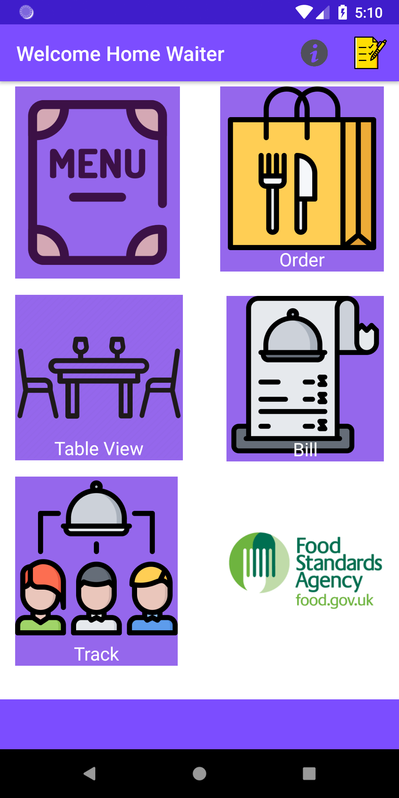By clicking the yellow not icon on the top right of the screen you will be navigated to quick notes page where you can scribble in anything that you want to rememeber for example something that a customer is allergic to
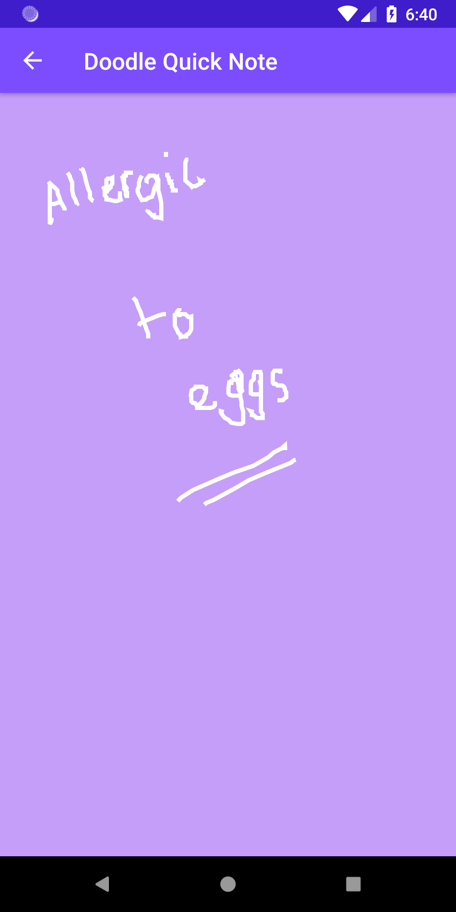Welcome to the Digital Menu, From here you can navigate to the the subcategories of the menu (Drinks, Starters, Mains and Deserts).To add the food item that the customer requires you can scroll through the list and select the food item or you could use the search functionality
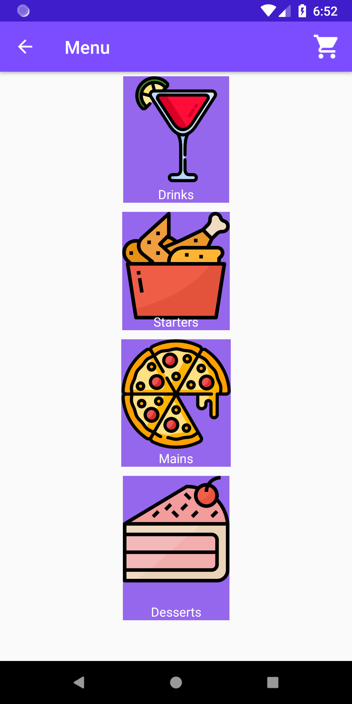 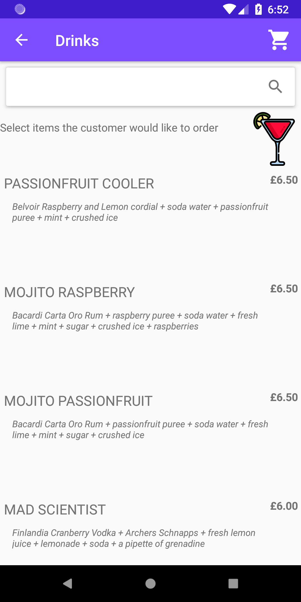 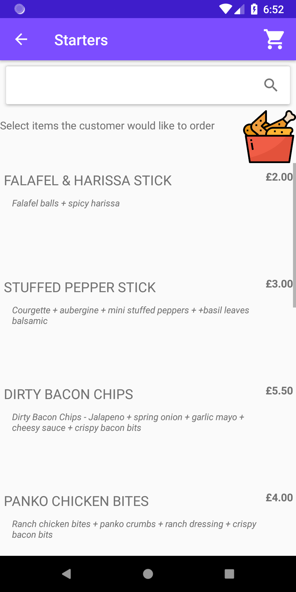 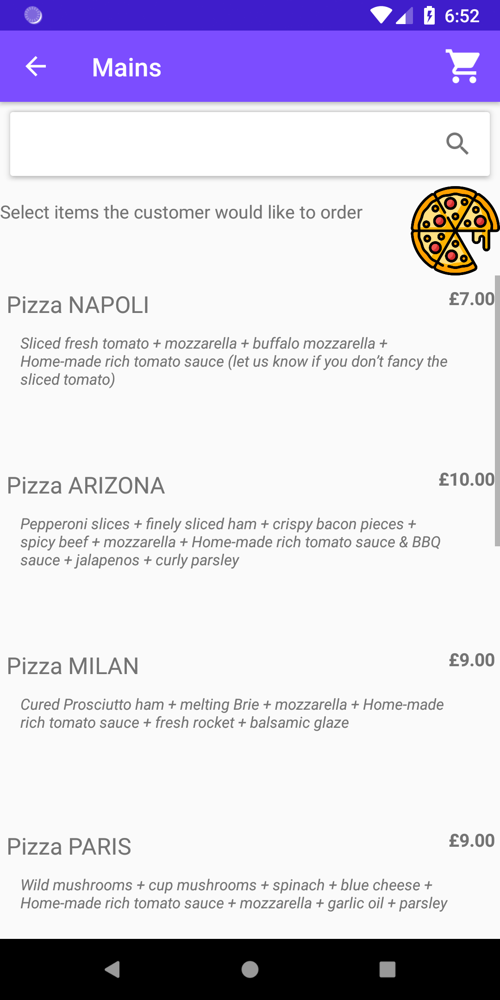 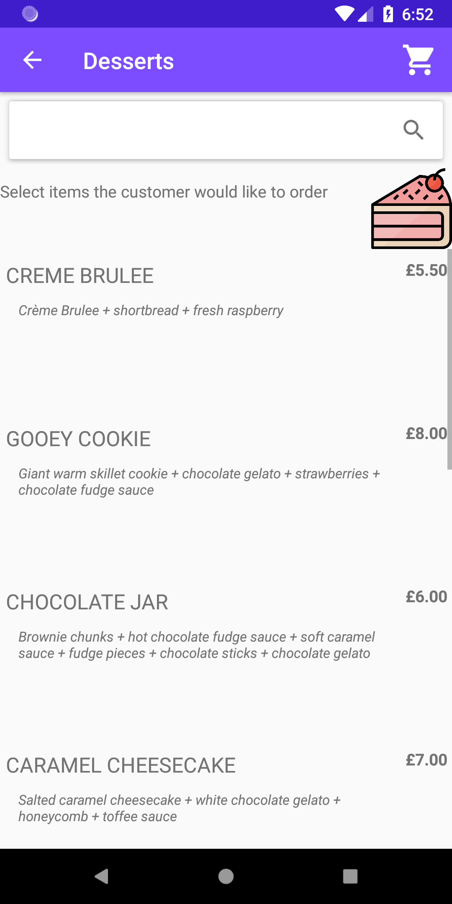To quickly find a food item you can do a search, Some suggestions are loaded to execute a quick search. After typing in the name of the food hit search button from keyboard then results will be loaded
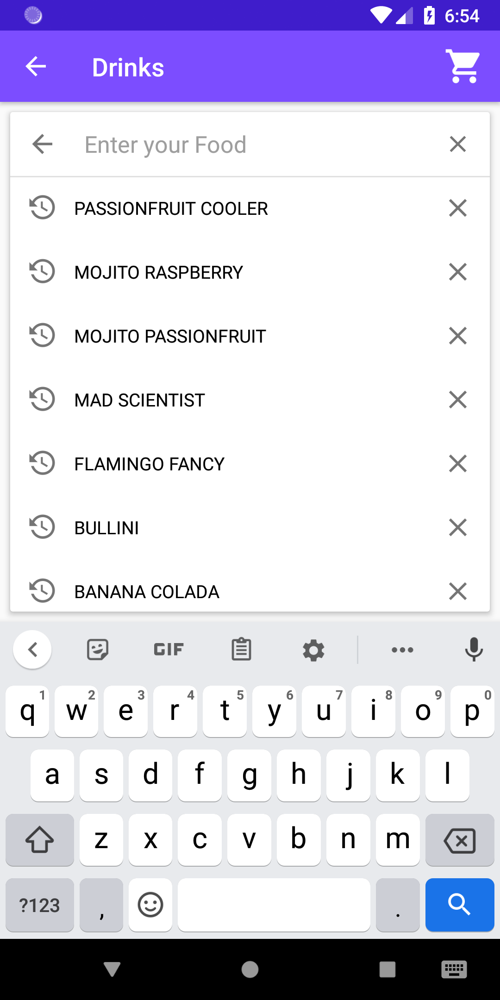 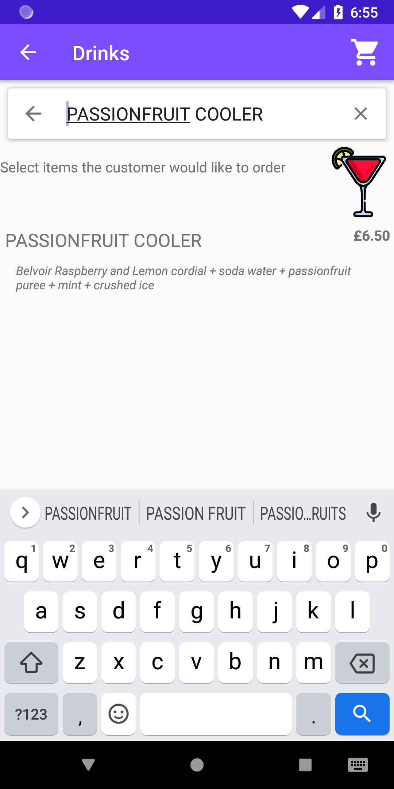When a food item is selcted it will be expanded giving more details about it from this screen, Select the quantity required using the number picker then press the "+" button to add item to cart
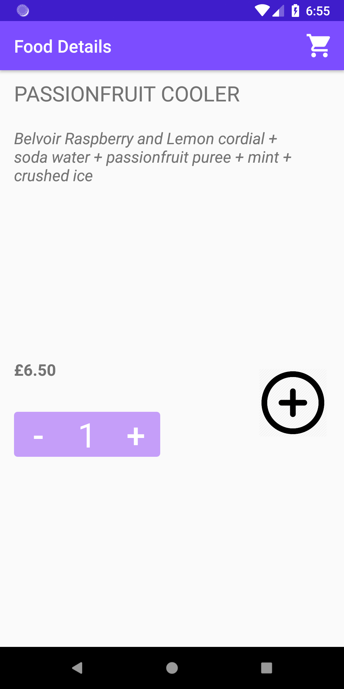This is the basket, all food items that are added to the basket will be visible here, from here you can review what you have added to the cart and check with the customer to double check thier order. Then You must select the correct table number from the number picker and then press comfirm to submit the order. if you need to clear the cart you can click the bin icon at the top right
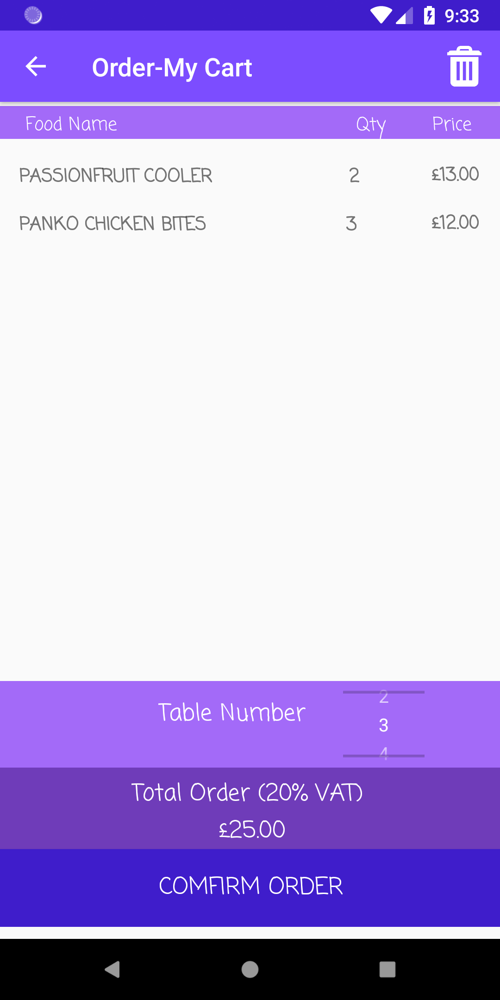This is the table view in this page you can see which tables are occupied and which tables are free. Green light means the table is available, Red means the table is occupied, Blue means the table is occupied and food is served.
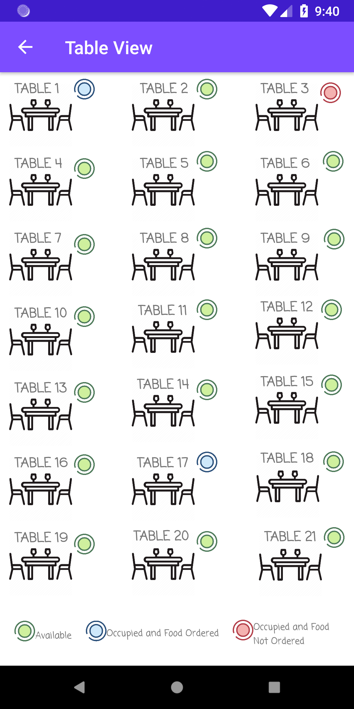Use this feature to usher guests to a table that is available and click on table and mark as occupied. From table details you can order more food , release the table if the guest were to leave , mark as "food served", see all the orders placed by the table and bill the table
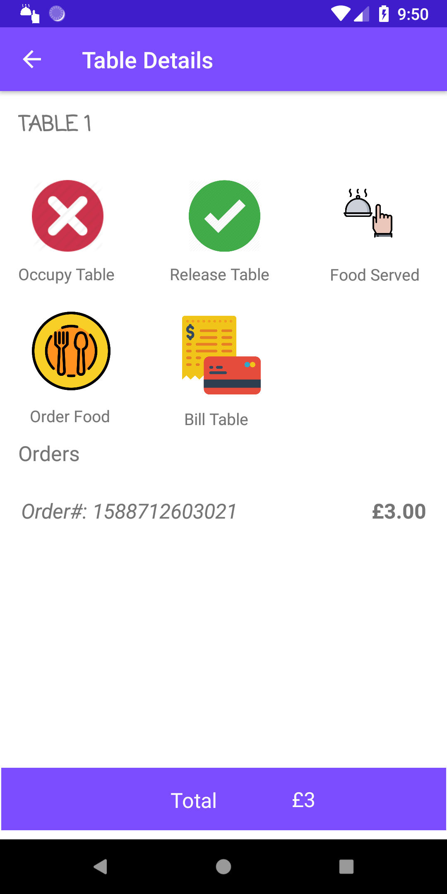Bill feature allows you to bill out the table, you must select the table number through the table view and select bill table option within the table details page of the selected table.
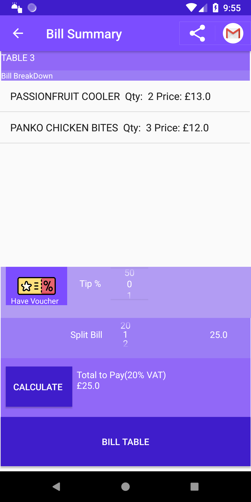Send Email copy: hit the gmail button on the top right corner of the page this will take you to the email client and insert customer emails to forward a copy of the receipt
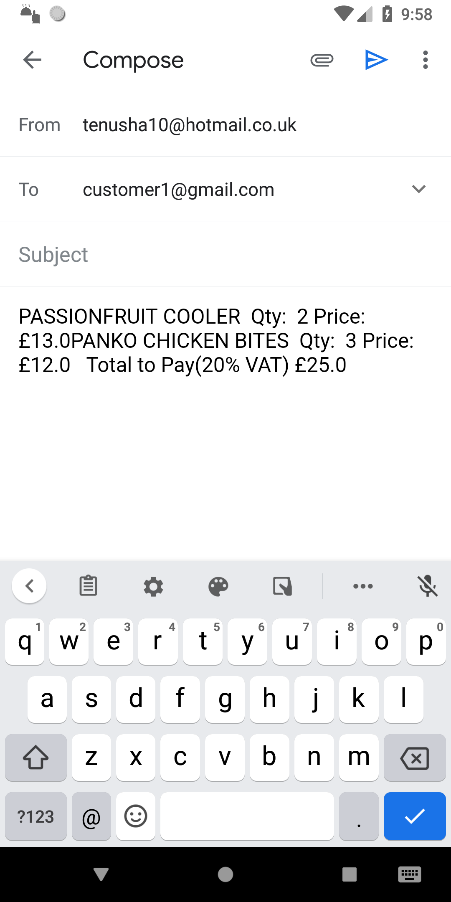Add vouchers : To scan a voucher press the "have voucher" button this will open up your camera and allow you to scan the voucher , please allow access to the camera and scan in voucher. if the voucher is valid it will be accepted if not hit back button to return back to bill
A voucher example
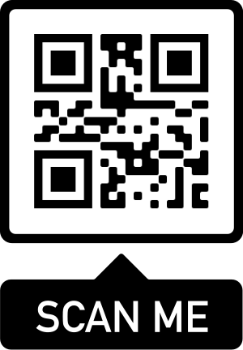 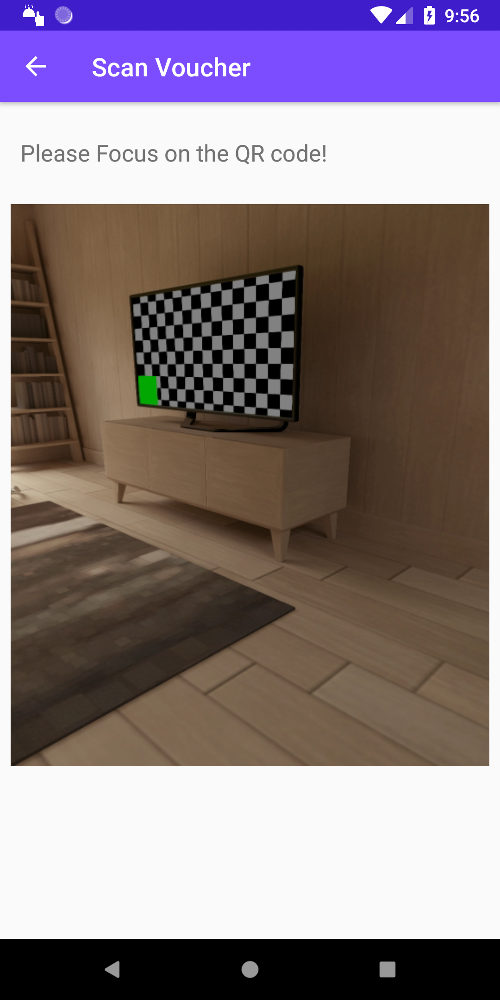Tips and Split Bill : If the user wants to add tips or split the bill you need to select the appropriate values from the number pickers and hit calculate button to get a new total
Finally click the "Bill table" button at the bottom to complete the billing process"
From here you can track all the orders that is currently placed by other waiters or yourself. Scroll to find all existing orders and the order items. Use this to make sure the correct food is served to the correct table
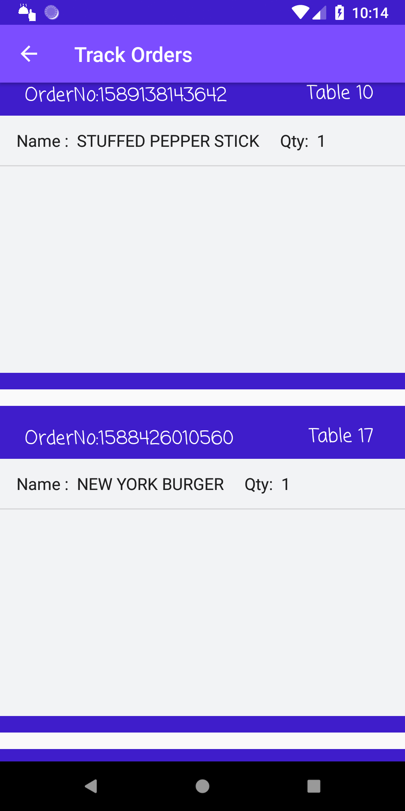Please use the official food standard document about allergies if you are ever unsure by clicking on the "Food standards agency" logo on the home page which will open a pdf giving information about allergies
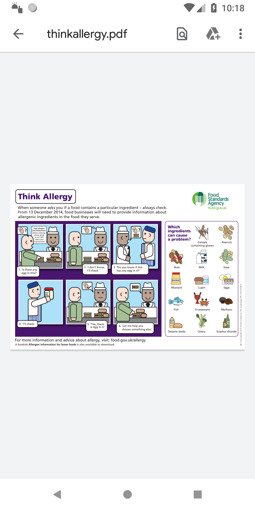